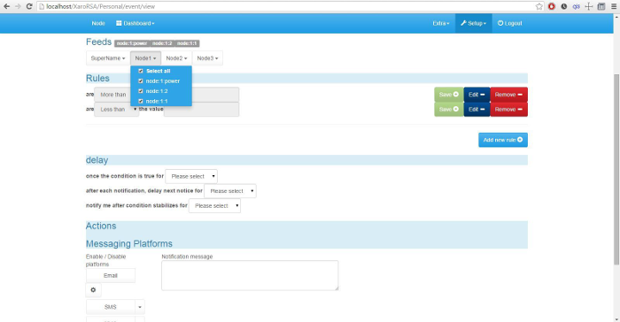
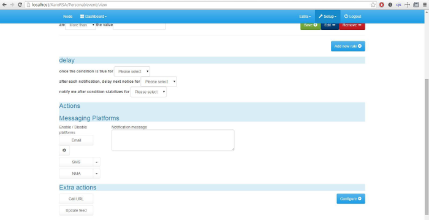

Im building a new event module as part of my custom EmonCMS build, but I am have a hard time working out the UI(User interface).
So how it works:
In the feeds section at top, you can select feeds. Selected feeds show in the labels next to header, simple.
Next configure the Rules. create a rule, save it (this seems also a bit sloppy from UI UX to me?).
next configure delays and offsets(this is ok, thou assistance with correct english and text would be appreciated!).
Next is the actions, which is split into 2 parts. Messaging and 'extra actions'.
Here is where I need some input. Anyone have a idea how to display this option in a graceful and non complicated way?
In this area the user needs to select what message platform he/she should be notified on, and aswell be able to do minor configuration such as adding email address.
There needs to be a area for adding recipients for email and sms etc, so each 'platform' would need a config button? Or just one config button?
Are there any UI or UX people on the forum that can assist?
Event module builder UI
Submitted by XaroRSA on Tue, 12/01/2016 - 17:17Hi EmonFolks!
Im building a new event module as part of my custom EmonCMS build, but I am have a hard time working out the UI(User interface).
So how it works:
In the feeds section at top, you can select feeds. Selected feeds show in the labels next to header, simple.
Next configure the Rules. create a rule, save it (this seems also a bit sloppy from UI UX to me?).
next configure delays and offsets(this is ok, thou assistance with correct english and text would be appreciated!).
Next is the actions, which is split into 2 parts. Messaging and 'extra actions'.
Here is where I need some input. Anyone have a idea how to display this option in a graceful and non complicated way?
In this area the user needs to select what message platform he/she should be notified on, and aswell be able to do minor configuration such as adding email address.
There needs to be a area for adding recipients for email and sms etc, so each 'platform' would need a config button? Or just one config button?
Are there any UI or UX people on the forum that can assist?
Edit - resized images. Moderator, BT
Please read http://openenergymonitor.org/emon/node/11357

